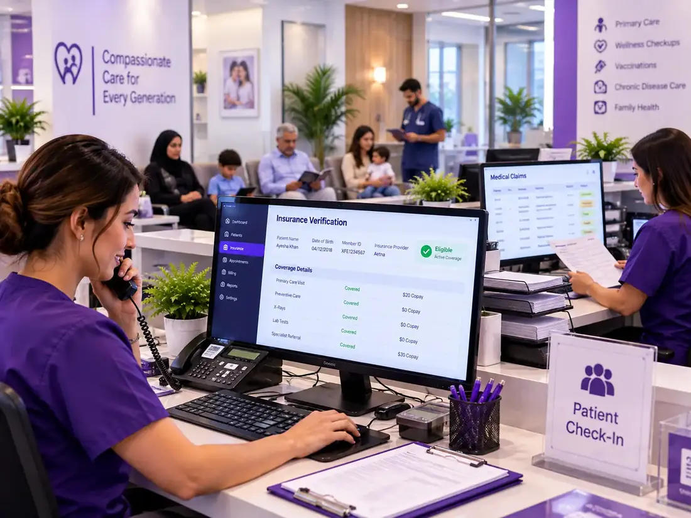
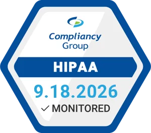
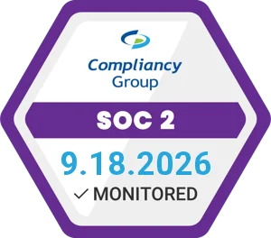

Family medicine billing covers everything from simple sick-visit type codes to more complex chronic disease management and preventive care type codes, as well as care coordination services, all of which require unique coding that is typically misapplied by generalist billing staff. You get the full billing cycle handled by experts, so your physicians can focus on patient care.

Family medicine billing includes various forms of care, such as preventive care, chronic disease management, acute care visits, the annual wellness exam and transitional care management. Different payer, coding, and documentation requirements for each service add further complexity to billing in busy practices.
Practices need to keep up with developing E/M coding guidelines, preventive care regulations, and chronic care management requirements as reimbursement rules evolve. Poor coding, missed billable services, or even both can lead to lost revenue, denied claims, and lower reimbursement rates.
Even higher patient volumes present further challenges. Scheduling, insurance verification, claim submission, and payment follow-up are handled by front-office staff, who have little bandwidth for the minutiae of revenue cycle management. This leads to more denials, higher accounts receivable, and slower collections.
Family medicine billing service outsourcing provides practices with seasoned professionals who dedicate themselves solely to ensuring coding, claims management, denial analysis and resolution and payer compliance. This helps enhance reimbursements, streamline administrative burdens, speed up collections, and enable providers to focus on patient care.
Since the 2021 CMS documentation revision, the E/M level is determined by medical decision-making complexity or total time, not exam elements. Practices still using pre-2021 coding logic are systematically downcoding office visits and collecting less than they've documented.
Billing a medically necessary problem-focused visit alongside a preventive exam on the same date requires modifier 25 on the E/M code and documentation clearly identifying the separately identifiable service. Missing this modifier produces automatic bundling denials.
CCM codes (99490, 99491) require a signed patient consent, a comprehensive care plan, at least 20 minutes of clinical staff time per calendar month, and specific documentation of care coordination activities. Practices that meet these requirements but don't bill CCM are leaving significant monthly revenue uncollected.
Most patients funnel into the family medicine referral pathway; prior authorisation requirements for specialist visits, imaging, and procedures create never-ending administrative cycles that not only delay care but also result in denials when authorisation is absent or expired.
Family medicine diagnoses span the full ICD-10 range. Unspecified diagnosis codes, missing laterality, or imprecise code selection fail the medical necessity review and result in denials that require claim rework, adding cost to every claim that should have been clean on first submission.
At 30–50 encounters per physician per day, small systematic errors in claim submission accumulate into AR backlogs faster than most in-house billing teams can resolve without dedicated follow-up bandwidth.
Family medicine billing services that encompass each step of the revenue cycle, including Experts versed in E/M documentation guidelines, preventive care coding and chronic disease management billing requirements
Before each appointment, receive verification of coverage in real time, including limits on preventive care benefits, deductibles, and referral authorisation requirements.
E/M level selection based on current 2021 CMS MDM/time criteria, preventive care code assignment, and accurate ICD-10 diagnosis coding across the full primary care spectrum.
Clean claims submitted with correct modifiers, diagnosis pointers, and documentation of same-day encounters, within 24–48 hours of visit documentation receipt.
Authorisation management for specialist referrals, imaging orders, and procedures, with tracking to prevent lapses that produce denials after referrals are already made.
Accurate EOB posting reconciled against fee schedules and contracted rates, with systematic underpayment identification across all payers.
Structured follow-up scaled to family medicine claim volumes, weekly AR aging review, payer prioritisation, and escalation protocols for aging claims.
Root cause analysis on denied claims, appeal preparation with supporting documentation, and resubmission with correct code or modifier application.
Clear, compliant patient statements for copay and deductible balances, with coordination between primary and secondary payer explanations of benefits.
Regular practice-level reporting on collections, E/M level distribution, denial trends, and AR aging, giving physicians visibility into their own revenue performance.
Every encounter follows a structured workflow, including pre-visit eligibility checks, documentation-driven code selection, and proactive follow-up to prevent AR accumulation common in high-volume primary care.
Coverage confirmed before the appointment, preventive benefits, deductibles, referral requirements, and prior authorisation status verified upfront.
Clinical notes reviewed for E/M level support under current MDM/time criteria, and for CCM, TCM, and preventive care documentation completeness.
E/M level selected based on documented MDM complexity or time; modifiers applied for same-day preventive and sick visits; diagnosis codes verified for specificity.
Electronic submission with correct diagnosis pointers, modifier application, and referring NPI data, within 24–48 hours of documentation receipt.
Active follow-up on all pending claims within payer-specific processing timelines, no claim left without a status check.
EOBs posted and reconciled; underpayments flagged; patient responsibility identified for statement generation.
Denials appealed with documentation. AR aging is reviewed weekly. CCM and TCM billing gaps are identified and flagged proactively.
Family medicine billing covers office visits, preventive care, chronic care management, and care coordination services. Our specialists apply current CPT, HCPCS, and ICD-10 guidelines to ensure accurate coding, reduce denials, and maximise reimbursement.
| Service Type | CPT Code | Key Billing Rule |
|---|---|---|
| Office Visit (New Patient) | 99202–99205 | Since 2021, the level is determined by MDM complexity OR total clinician time, whichever supports the higher level; exam elements no longer govern level selection |
| Office Visit (Established Patient) | 99211–99215 | 99211 (nurse visit, no physician required) through 99215 (high-complexity MDM); time-based billing requires documentation of total time on the date of encounter |
| Preventive Visit (New Patient) | 99381–99387 | Age-stratified; code selected by patient's age group at time of visit, same rule as pediatric preventive codes, but extending through adult age ranges |
| Preventive Visit (Established Patient | 99391–99397 | Same age-stratification as new patient codes; well-visit benefit coverage varies by payer, and eligibility must confirm preventive benefit availability |
| Same-Day Sick Visit Alongside Preventive | E/M code + Modifier 25 | Modifier 25 required on the E/M code; documentation must clearly identify the problem-focused service as separately identifiable from the preventive exam |
| Chronic Care Management (20+ min) | 99490 | Requires signed patient consent, comprehensive care plan, ≥20 min clinical staff time per calendar month, documentation of care coordination activities, and cannot be billed for the same month as TCM |
| Chronic Care Management (Physician Time) | 99491 | For CCM time personally performed by the billing physician (not clinical staff), requires the same consent and care plan as 99490, but with ≥30 min physician time |
| Transitional Care Management (7 days) | 99495 | Post-discharge coordination requires contact with the patient within 2 business days of discharge and a face-to-face visit within 14 days, moderate complexity MDM |
| Transitional Care Management (14 days) | 99496 | Same contact requirement as 99495; face-to-face within 7 days; high complexity MDM, cannot be billed in the same period as CCM |
| Annual Wellness Visit (Medicare) | G0438 (initial), G0439 (subsequent) | HCPCS codes, not CPT, must include health risk assessment, personalised prevention plan, and screening review; not the same as a preventive E/M visit |
Since 2021, E/M levels have been selected based on medical decision-making (MDM) or total encounter time. Many practices continue to undercode visits by assigning lower-level E/M codes than the documentation supports.
Even small E/M coding errors across high patient volumes can result in substantial lost revenue. Our team reviews coding accuracy against current CPT and CMS guidelines to help ensure appropriate reimbursement and compliance.
Clean claims with correct E/M levels, proper modifiers, and complete diagnosis linkage, pass payer review faster, and reduce processing delays across a high daily encounter volume.
Pre-submission documentation review, modifier accuracy, and diagnosis specificity checks eliminate the systematic errors that cause family medicine's most common denials.
E/M levels coded per current MDM criteria; CCM and TCM codes billed where documented and eligible; and preventive care codes matched to the correct patient age across every encounter, every day.
Physicians and front-office staff are freed from claim follow-up, prior authorisation management, and denial rework, freeing up time for patient care and practice operations.
Revenue recovered from E/M undercoding, CCM billing gaps, and uncontested underpayments consistently improves net collections without adding patient volume.
Regular reporting on E/M level distribution, CCM billing performance, denial trends, and AR health data that identifies revenue gaps before they become permanent write-offs.
Our billing team works directly within the EHR and practice management platforms your family medicine clinic already uses. Visit documentation, CCM care plan records, and chronic disease management notes flow from your clinical system into billing workflows without manual re-entry, preserving the documentation chain that supports accurate E/M level selection under current CMS guidelines.
National Provider Identifier (NPI) data for both rendering and referring physicians is managed and verified in every claim, a frequently overlooked requirement in family medicine claims where referral NPI data affects both primary and specialty billing downstream.
Direct integration with your family medicine EHR platform
MDM documentation pulled from clinical notes for E/M level review
CCM care plan and consent records integrated with the monthly billing workflow
Real-time eligibility verification for preventive and sick visit benefits
Payment posting reconciled against contracted rates in your system
AR and denial reporting are accessible through your practice management dashboard
The measurable outcomes of specialist-managed family medicine billing include improvements in E/M level accuracy, CCM revenue capture, denial rates, and AR aging, each representing recoverable revenue that in-house billing at generalist skill levels consistently leaves behind.
At Outsource MedClaim, all family medicine billing workflows follow strict HIPAA and healthcare compliance standards. Patient records, care management documentation, and insurance data are protected through encrypted data transmission, secure systems, role-based access controls, and a signed Business Associate Agreement (BAA).
Our team also ensures compliance with CMS requirements for E/M coding, Chronic Care Management (CCM), and Transitional Care Management (TCM), helping reduce audit risk, prevent denials, and support accurate reimbursement.


Outsourcing family medicine billing helps practices improve collections, reduce coding errors, and recover lost revenue. Many providers see stronger cash flow and reduced administrative costs within the first few billing cycles.
A percentage-based model aligned with your monthly collections.
A fixed fee for each claim submitted, ideal for predictable patient volumes.
A consistent monthly rate covering comprehensive billing services.
Tailored solutions for multi-provider practices, community health centres, and complex billing environments.
Our billing team had never been retrained after the 2021 E/M change and was still using the old bullet-point counting method to select visit levels. Outsource MedClaim's initial audit found that we were coding roughly 35% of our established patient visits a level lower than our documentation supported. Correcting this alone added meaningful monthly revenue for a practice our size, which compounds significantly over a year.
We had over 200 patients who qualified for CCM billing but weren't collecting a single dollar because our staff didn't know how to set up the documentation workflow. Outsource MedClaim identified the eligible patient pool, helped us implement the consent and care plan process, and we started billing CCM within the first month. It's now a consistent monthly revenue stream we simply weren't capturing before.
We were billing preventive visits alongside same-day sick visits without modifier 25 and couldn't understand why the preventive claim kept getting denied. Our biller thought modifier 25 was optional. Outsource MedClaim fixed the modifier workflow, appealed the denied claims going back 90 days, and our preventive visit denial rate is now below 3%. The appeals recovered revenue we had already written off.
Family medicine billing commonly includes E/M codes (99202–99215), preventive care visits (99381–99397), chronic care management (99490, 99491), transitional care management (99495, 99496), and select HCPCS codes for screenings and care coordination services.
Outsourcing improves coding accuracy, reduces administrative burden, and helps capture revenue from services such as preventive care and chronic care management. It also supports better cash flow and fewer claim errors.
Specialised billing teams ensure accurate coding, complete documentation review, eligibility checks, and payer-specific compliance before submitting claims. This reduces preventable errors that lead to denials.
Documentation must support medical necessity, include appropriate E/M or service-specific details, and comply with CMS guidelines for preventive care, CCM, and TCM services.
Yes. All processes comply with HIPAA standards, including the handling of encrypted data, secure systems, role-based access controls, and a signed Business Associate Agreement (BAA).
Yes. We manage eligibility verification, accounts receivable tracking, denial resolution, and payer follow-ups to improve reimbursement and cash flow.
Most family medicine billing services can begin within a few weeks, depending on onboarding requirements and system integration.
Recover lost revenue from E/M undercoding, missed Chronic Care Management (CCM) billing, and preventive care claim denials. Our specialists review your current billing workflow at no cost and identify where revenue leakage is occurring.
A billing specialist will reach out within one business day to arrange your free assessment.
Submitting shares no patient data. We execute a BAA before any records are accessed.